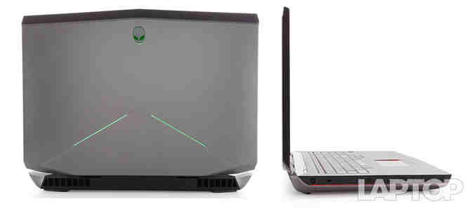
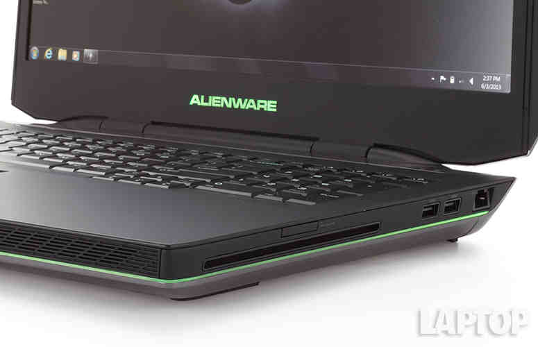
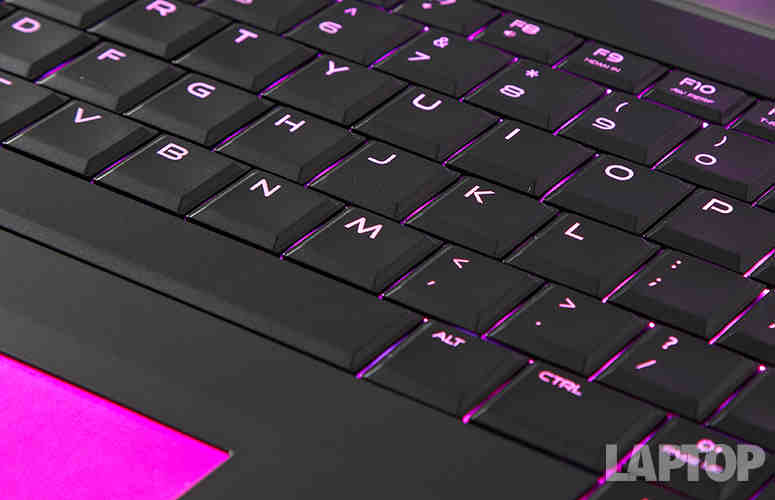
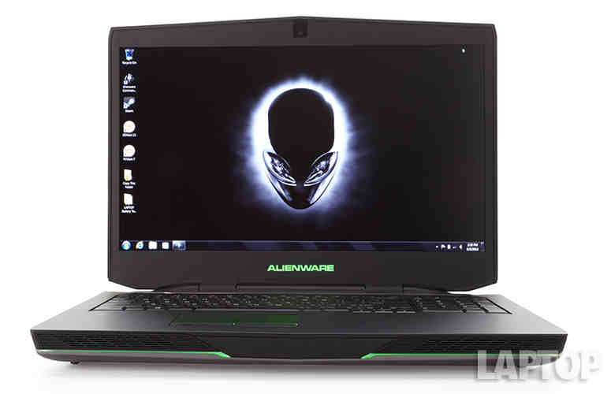
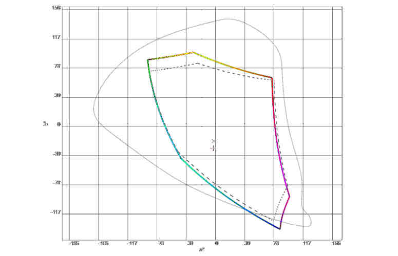
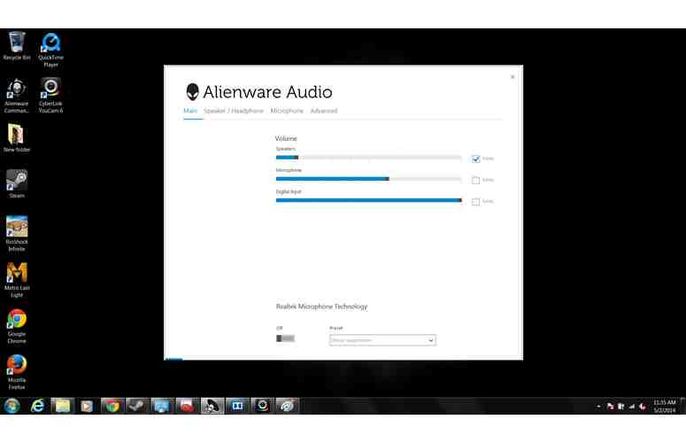
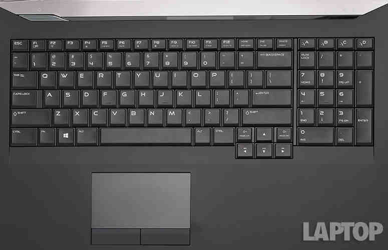
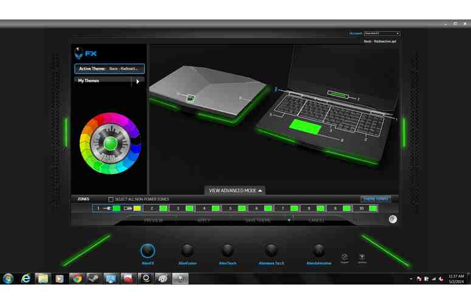
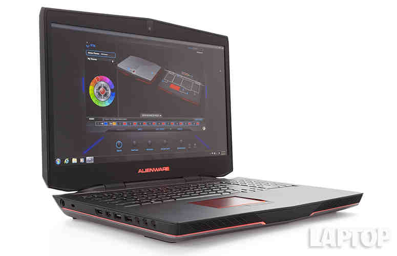

Laptop Lounge
Alienware 17

Editor's Rating:
The Pros
Sexy chassis; Colorful 1080p display with wide viewing angles; Customizable lighting; Excellent graphics and performance; Big and rich audio
The Cons
Expensive; Heavy.
Verdict
The Alienware 17 gaming laptop retains the stunning looks and awesome display of its predecessor and adds a more powerful CPU and the latest Nvidia graphics.
Design
We continue to be huge fans of the Alienware 17's redesign. It's like "Tron" and "Xanadu" had a baby -- a groovy, techie baby. The two-toned, gray, anodized-aluminum lid is topped with a black, soft-touch lip. It's a handsome contrast for the backlit alien head and the pair of tantalizing LEDs intersecting diagonally near the bottom of the lid.
The notebook's interior is coated in a luxurious, black, soft-touch finish. A matte dark-gray band sits at the top of the deck. Directly below, a thin, glossy strip leads to a fairly large power button on the left side. The keyboard, power button and touchpad sport an eerie, blue glow that can be changed to a plethora of colors.
The 17.9 x 12.9 x 2.26~2.23-inch Alienware 17 is a behemoth, weighing a portly 9.2 pounds. It makes the 8.6-pound Digital Storm Krypton (16.3 x 11.26 x 1.81 inches) seem small by comparison. However, the 9.4-pound, 16.1 x 12.5 x 0.67~1.96-inch ASUS G750JZis outweighs Alienware's glittering monster.

By Alienware's standards, the 13 is the thinnest of the series. However it's still on the thick side compared to the Razer Blade (2014)'s 4.4-pound, 13.6 x 9.3 x 0.7-inch chassis as well as the Lenovo Y40's 4.4-pound, 13.7 x 9.8 x 0.9-inch frame.
Lighting
It just wouldn't be an Alienware without the over-the-top light show. The company wrapped a strip of light around the sides of the laptop and backlighting for the touchpad. The presentation was impressive under our office's fluorescent lights, but the notebook really shines in the dark.
Just like the previous generation, the AlienFX software in the Alienware Command Center lets you choose from one of 13 preloaded lighting profiles or create a custom profile. Creating a profile is fairly easy: After selecting the New Theme option, users can assign 20 colors to each of the notebook's 10 zones.
AlienAutopsy (diagnostics and maintenance) and AlienRefresh (system restore) have been removed from the Command Center and now live with the other apps in Windows 8.1.
The fun really begins when you add the Morph and Pulse effects. The Morph effect cycles between two designated colors, while Pulse makes the lights flash on and off at a set tempo. A profile can be as basic or complex as you want. Best of all, you can program specific settings for certain profiles using the AlienAdrenaline utility.
Alienware has also partnered with several popular game developers to create custom profiles for specific titles. The company currently offers 60 titles, including "Metro: Last Light," "Orcs Must Die 2," and "Hotline Miami."
Display
Dishing out vivid hues and capturing sharp details, the Alienware's 17.3-inch matte anti-glare 1920 x 1080-pixel display continues to be one of the best-looking in its class. Text looks crisp, and the viewing angles are generous enough to comfortably accommodate three people.
The panel continued to impress as we played "Metro: Last Light," delivering deep, rich blacks; somber grays; and pops of red, yellow and green. We were especially impressed by the waves of heat radiating from the large grill used to cook food for our unit.
During the Delta-E test, which evaluates color accuracy, the Alienware 13 scored 3.7 (0 is considered perfect). It beat the 7.7 average, but was upstaged by the Y50-70 and Blade 14, which registered 2.7 and 1.5 percent respectively.
Audio
Alienware took a "If it ain't broke, don't fix it" approach to audio on the Alienware 17, once again equipping its notebook with Klipsch speakers. The front-mounted speakers are certainly powerful, and easily filled our room with full-bodied, balanced audio.
Robin Thicke's uptempo dance track "Blurred Lines" delivered snappy snares, clear keyboards, a strong bass line and enough cowbell to satisfy our fever.
From the pew, pew from my Inflamator laser, to the big measured blasts from my Investment Sniper Rifle, Borderlands was a symphony of destruction. Although the explosions were nice and hefty, my favorite sound was the sharp crack from my Lawbringer's whip as she delivered justice in her own sadistic way.
Keyboard
Alienware's traditional keyboard continues to be the gold standard when it comes to gaming notebooks. The traditional keyboard spans the width of the deck and includes a full number pad. Above the number pad are four additional keys for macros.
The large, black keys delivered firm, snappy feedback and have 3mm of vertical travel. That's higher than the typical 1.5 to 2 mm, which resulted in a more comfortable typing experience. The keyboard maintained its comfy bounce as we put the hurt on a few psychos in "Borderlands 2."
In the more mundane world of typing, we notched our normal 60 words per minute with a 1 percent error rate on the Ten Thumbs Typing Tutor test.
Verdict
Somehow, Alienware has managed to top itself -- again. The Alienware 17 continues to catch every single eye in the room with its cocky, flashy design. And once this rig has your attention, it reels you in more with a gorgeous 1080p display and a stellar sound system. From there, it hits you with a one-two punch from the upgraded Core i7 processor and Nvidia GeForce GTX 880M CPU -- a combination that Floyd Mayweather would be proud of.
But all this power and good looks don't come cheap, and the $3,385 price tag is prohibitive for many people. For $1,100 less, gamers can get the MSI GT60 Dominator Pro, which offers comparable graphics performance and a gorgeous 2880 x 1620p display. Still, for those that can afford it, the Alienware 17 continues to be the go-to gaming rig for the best combination of design, audio oomph, comfort and power.